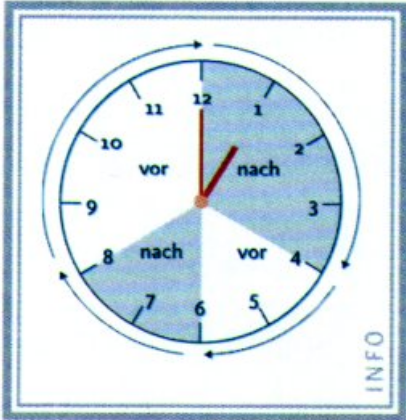
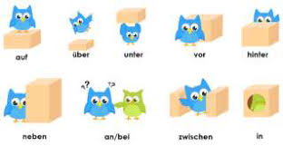

It was always so destined, that German will become part of my life.
Dedicated to all the foreigners here in Germany, trying to make sense out of this language.
Masculine Feminine Neutral
-el -age -tum -en -e -ment -er -ei -ium -ig -ie -um -ich -heit -chen -ling -keit -lein -schaft -ik -in -ion -tät -ung -ur
Gender of compound noun always the gender of the last noun.
Masculine Feminine Neutral
Der Esel Die Tafel Das Segel Der Nagel Die Gabel Das Kabel Der Kegel Die Kugel Das Kuchen Der Hebel Die Nudel Der Pudel Die Nadel Der Löffel Die Insel Der Pinsel Die Zwiebel Der Schlüssel Die Muschel Der Gürtel Die Kartoffel Der Tunnel Der Äpfel Der Deckel
Masculine Feminine Neutral
Der Ofen Das Küken Der Besen Das Hähnchen Der Bogen Das Rücken Der Haken Das Kuchen Der Regen Das Mädchen Der Wagen Das Kissen Der Daumen Der Faden Der hasen Der Reifen
Masculine Feminine Neutral
Der Maler Die Feder Das Ruder Der Kleber Die Mauer Das Kinder Der Hamster Die Wimper Das Fenster Der Anker Die Ampel Das Feuer Der Hammer Die Butter Das Wasser Der Messer Der Tiger Der Koffer Der Finger Der Teller Der Sessel Der Pflaster Der Hinduismus
Masculine Feminine Neutral
der Honig X X
Mostly adjectives like - richtig, wichtig, fertig, ruhig
Masculine Feminine Neutral
der Teppich X X
Masculine Feminine Neutral
der Hinduismus X X der Optimismus
Mostly adjectives like -lich wirklich, fröhlich, plötlich, moglich
Masculine Feminine Neutral
der Lehrling X X
Masculine Feminine Neutral
X die Kalte X X die Frage X
Masculine Feminine Neutral
X die Lehrerin X
Masculine Feminine Neutral
X die Krankheit X
Masculine Feminine Neutral
X die Fröhlichkeit X
Masculine Feminine Neutral
X die Impfung X
Masculine Feminine Neutral
X X das Häuschen
Masculine Feminine Neutral
X X das Ereignis
Masculine Feminine Neutral
X X das Bächlein
masculine feminine neutral plural
Nominative der die das die Accusative den die das die Dative dem der dem den Genitive des der des der
Applies also to - diese-, jede-, manche-, alle-, einige-
masculine feminine neutral
Nominative ein eine ein Accusative einen eine ein Dative einem einer einem Genitive eines einer eines
Applies also to - irgendien-
der Mann geht.
ein Mann geht.
kein Mann geht.
die Frau kommt.
eine Frau kommt.
keine Frau kommt.
das Kind spielt.
ein Kind spielt.
kein Kind spielt.
die Kinder spielt.
keine Kinder spielt.
Ich fahre den Wagen.
Ich fahre einen Wagen.
Ich fahre keinen Wagen.
Ich kaufe die Uhr.
Ich kaufe eine Uhr.
Ich kaufe kein Uhr.
Ich lese das Buch.
Ich lese ein Buch.
Ich lese kein Buch.
Ich lese die Bücher.
Ich lese keine Bücher.
Ich kaufe essen für meinen Vater .
Ich reise ohne meinen Wagen .
Der Wagon fährt gegen ein Haus .
Ich macht nichts um die Umwelt .
Ich gehe den Weg entlang .
Ich schicke dem Vater nichts.
Ich schicke einem Vater nichts.
Ich schicke keinem Vater nichts.
Ich schicke der Mutter nichts.
Ich schicke einer Mutter nichts.
Ich schicke keiner Mutter nichts.
Ich schicke dem Kind nichts.
Ich schicke einem Kind nichts.
Ich schicke keinem Kind nichts.
Ich schicke den Kinder nichts.
Ich schicke keinen Kinder nichts
Ich komme an dem See vorbei.
Mein Wagon ist bei meinem Haus .
Ich schlafe nach der Arbeit .
Ich lebe seit drei jahre in deisem Haus .
Ich bekomme einen Brief von der Arbeit .
Ich werde zu meinem Geburtstag eine Feier machen.
ich habe dem Leben gegenüber eine positive Einstellung.
Pronoun Nominative Verb Pronoun Dativ
Du gehört mir Ich gefällt dir Ich hilft ihm Ich danke ihr Ich schicke ihm
Nominative Accusative Dative Possessive
ich mich mir mein du dich dir dein er ihn ihm sein es es ihm sein sie sie ihr ihr wir uns uns unser ihr euch euch euer sie sie ihnen ihr Sie Sie Ihnen Ihr
Accusative - Du sieht mich.
Dative - Du gibt es mir.
Possessive - Es ist mein Haus.
Accusative - Ich sehe dich.
Dative - Ich gebe es dir.
Possessive - Es ist dein Haus.
Accusative - Ich sehe ihn.
Dative - Ich gebe ihm dies.
Possessive - Es ist sein Haus.
Accusative - Ich sehe es.
Dative - Ich gebe ihm dies.
Possessive - Es ist sein Haus.
Accusative - Ich sehe sie.
Dative - Ich gebe ihr dies.
Possessive - Es ist ihr Haus.
Accusative - Ich sehe uns.
Dative - Ich gebe uns dies.
Possessive - Es ist unser Haus.
Accusative - Ich sehe euch.
Dative - Ich gebe euch dies.
Possessive - Es ist euer Haus.
Accusative - Ich sehe sie.
Dative - Ich gebe ihnen dies.
Possessive - Es ist ihr Haus.
Accusative - Ich sehe Sie.
Dative - Ich gebe Ihnen dies.
Possessive - Es ist Ihr Haus.
masculine feminine neutral
Nominative einer eine eines Accusative einen eine eines Dative einem einer einem Genitive eines einer eines
Same for Deise-, Jede-, Manche-, Einege-, Kein-, Viele-, Wenige-, Irgendwelche-
Wo ist den Espresso/das Messer/die Portion ? (Ak)
Wer mochte noch einen Espresso/ein Messer/eine Portion ? (Ak)
Hier ist (No.) Ich möchte (Ak)
Der Espresso einer einen Das Messer eines eines Die Portion eine eine
| masculine| feminine| neutral|
|-----------|----------|---------|--------|
| Nominative| der | die | das |
| Accusative| den | die | das |
| Dative | dem | der | dem |
| Genitive | dessen | deren | dessen |
Nominative - der Mann, der gut kochen kann.
Akkusativ - der Mann, den ich kenne.
Dativ - der Mann, dem ich helfen musste.
Prasens sein haben werden
ich bin habe werde du bist hast wirst er,sie,es ist hat wird ihr seid habt werdet wir/sie,Sie sind haben werden
Präteritum sein haben werden
ich war hatte wurde du warst hattest wurdest er,sie,es war hatte wurde ihr wart hattet wurdet wir/sie,Sie waren hatten wurden
Perfect sein haben werden
ich bin ... gewesen habe ... gehabt bin ... geworden
PlusqaumPerfekt sein haben werden
ich war ... gewesen hatte ... gehabt war ... geworden
sein satz +
als Vollverb ich bin Mude Adjektiv als Vollverb ich bin Artzin Nomen als Vollverb Die Tür ist gescholssen Partizip II als Hilfsverb ich bin gestern angekommen Perfect als Hilfsverb ich war gestern angekommen PlusqaumPerfekt als Modelverb Es ist noch viel zu tun
haben satz +
als Vollverb ich habe Hunger Nomen als Hilfsverb ich habe ihn gefragt Perfekt als Hilfsverb ich hatte ihn gefragt PlusqaumPerfekt als Modelverb ich habe noch viel zu tun
werden satz +
als Vollverb ich werde Artzin Nomen als Vollverb ich will Artzin werden Nomen als Vollverb ich werde ungeduldig Adjektiv als Hilfsverb Hier wird eine museum gebaut Passiv als Hilfsverb ich werde dich bald besuchen Future 1 als Hilfsverb ich würde jetzt gern schlafen Konjunktiv II als Modelverb Es wird krank Sein
Prasens Prateritum
ich -e -te du -st -test er/es/sie -t -te ihr -t -tet wir/sie/Sie -en -ten
sprechen lesen treffen essen helfen
ich spreche lese treffe esse helfe du sprichst liest triffst isst hilfst er/es/sie spricht liest trifft isst hilft ihr sprecht lest trefft esst heflt wir/sie/Sie sprechen lesen treffen essen helfen
ge-t -t ge-n trennbar
gelernt repariert gelesen angerufen gemacht trainiert geschlafen aufgeräumt gehort telephoniert gesehen eingekauft gespielt verkauft getrunken eingeladen gefragt verdient gegeben ferngesehen gesagt besucht gegessen eingeschlafen gearbeitet fotografiert geschrieben
ge-n trennbar
gekommen angekommen gefahren abgefahren gegangen aufgewachsen geflohen eingesteigen gerannt aufgesteiegen gelaufen aufgestanden geblieben
können müssen wollen möchten dürfen sollen
ich kann muss will möchte darf soll du kannst musst willst möchtest darfst sollst er/es/sie kann muss will möchte darf soll ihr könnt müsst wollt möchtet dürft sollt wir/sie/Sie können müssen wollen möchten dürfen sollen
Positiv Komparativ Superlativ
gut besser am besten gern lieber am liebsten viel mehr am meisten lustig lustiger am lustigen alt älter am ältesten groß größer am größsten klug klüger am klügsten
masculine feminine neutral
Nominative er e es Accusative en e es Dative em er em Genitive en er en
masculine feminine neutral
Nominative e e e Accusative en e e Dative en en en Genitive en en en
masculine feminine neutral
Nominative er e es Accusative en e es Dative en en en Genitive en en en

6:30 - halb sechs
9.45 - Viertel von zehn
3:20 - zwanzig nach drei
7:25 - funf vor halb acht
10:35 - funf nach halb zehn
Prepostition Zeit Bispeil
an (Dat) Wochenende am Deinstag / am Abend ab Uhrzeit (jetzt -> drei Uhr) ab drei Uhr um Uhrzeit um drei Uhr (x drei Uhr) in (Dat) (jetzt -> Zeitpunkt Zukunft) in der Nacht/im Juli/Summer von/bis Uhrzeit von 9 Uhr bis 10 Uhr vor (Dat) before Zeitpunkt von dem Kurs nach (Dat) After Zeitpunkt nach dem Kurs für (Akk) Zeitspanne für zwei Wochen
Prepostition Platz Bispeil
mit (Dat) Wie Ich fahre mit dem Taxi ohne (Akk)
Prepostition Platz Bispeil
aus Woher Ich komme aus dem Auto von Woher Ich komme von dem Frisuer in Wo Ich wohne in Berlin bei Wo Ich bin bei dem Training nach Wohin Ich gehe nach Berlin zu Wohin Ich gehe zu dem Arzt
Wo + Dativ (lying) Wohin + Akkusativ (move)
liegen legen stehen stellen stecken stecken hangen hangen
Preposition used - auf, neben, an hinter, in uber, unter, vor, zwischen

Der Vogel + verb + preposition + Akkudative/Dativ + Box.
Prepostition Platz Bispeil Verb
auf/unter/nehmen Wohin Ich legt es auf den Tisch legen an Wohin Ich stelle es aus den Tisch stellen in Wohin Ich stecke es in die Geldbörse stecken an Wohin Ich hängen es an die Wand hängen
Prepostition Platz Bispeil Verb
auf/unter/nehmen Wo Es liegen auf dem Tisch liegen an Wo Es stehen an der Ecke stehen in Wo Es steckte im Schrank stecken an Wo Es hängen an die Wand hängen
Er hat als Deutsche gesrochen
Ein Tag wie jeder andere
Er is großer als du
as big as - Er is so große wie du
Past - Als ich in Berlin ankam, sehe ich dir Mauer.
Future - Ich bringe es, wenn ich morgen komme.
Ich komme nicht Morgen, denn ich habe keine Zeit.
Ich komme nicht Morgen, weil ich keine Zeit habe .
Ich habe keine Zeit, deshalb ich nich Morgen komme .
Obwohl er mein Cousin ist, kann ich nichts für ihm tun.
Wenn ich keine Zeit haben , ich komme nicht Morgen. (NS vor HS)
Ich komme nicht Morgen, wenn ich keine Zeit haben . (HS vor NS)
Beginning konjuction Ende
Es ist wichtig, dass du gut in Deutsche bist Es ist schon, dass du gut in Deutsche bist Es tut mir leid, dass du schlecht in Deutsche bist Ich bin sicher, dass du gut in Deutsche bist Ich denke, dass du gut in Deutsche bist Ich meine, dass du gut in Deutsche bist Ich finde, dass du gut in Deutsche bist Ich glaube, dass du gut in Deutsche bist Ich weiß, dass du gut in Deutsche bist
English Deutsch
I was sure, I would not make it. Ich war sicher, dass ich nicht machen würde.
English Deutsch
If I had won, I would have gone to America. Wenn ich gewonned hätte , würde ich nach Amerika gefahren.
Ich + hätte/wäre + Perfect
English Deutsch
I would have slept. Ich hätte geschlafen.
English Deutsch
I would have come. Ich wäre gekommen.
Du solltest Detective werden.
Du könnte Detective werden.
Direct Indirect
She said, “I am writing a letter.” She said that she was writing a letter. Sie sagte, “Ich schreibe einen Breif.” Sie sagte, dass sie einen Breif sagte.
subject + reflexive verb + relexive pronoun + reflexive proposition + Akk/dativ object
Subject Akku Dativ
ich mich mir du dich dir er/sie(f)/es/sie(p)/Sie sich sich wir uns uns ihr euch euch
Same as ordinary verb but with reflexive Pronouns
Describe things you do to yourself
Reflexive form Meaning
sich anziehen to get dressed sich aufregen to get excited sich bedanken say thank you sich beeilen to hurry sich beschäftigen mit to be busy with sich benehmen behave sich bewerben um to apply for sich erinnern an to remember sich erholen recover sich erkälten catch a cold sich eingen be suited sich entschlieben decide sich freun auf to look forward to sich interessieren für be interested in sich irren be wrong sich melden to volunteer sich rasieren to shave sich sitzen to sit down sich traun to dare sich umsehen to look around sich verabschieden say goodbye sich verneigen bow sich weigern refuse
Reflexive form Meaning
sich abgewöhnen to give up sich ansehen to have a look at sich einbilden to imagine wrongly sich erlauben to allow oneself sich leisen to afford sich nähren to get close sich verbitte to refuse sich vorgenommen to resolve sich vornehmen to plan sich vorstellen to imagine sich wünschen to want sich zugezogen to contract
Akkusative - auf, über, in
Dative - an, mit, von, vor